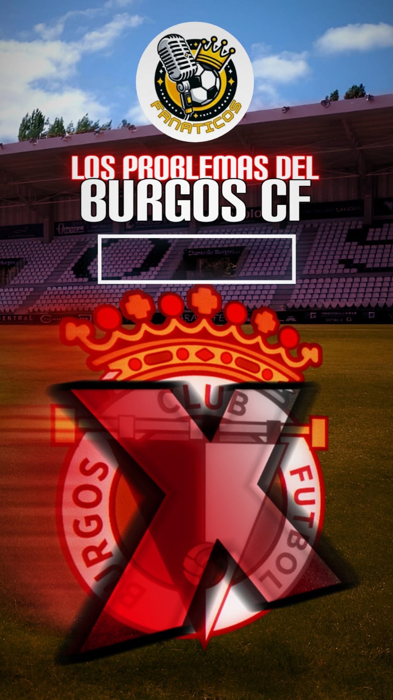

El conjunto blanquinegro está sumergido en una dinámica muy negativa que preocupa y mucho a los aficionados burgaleses.
Ya son nueve jornadas consecutivas sin conocer la victoria y me da a mí que como no cambie el plantel, ese número se incrementará, poniendo en duda más si cabe, la permanencia en segunda división.
¿A qué se debe este mal juego?
El problema del Burgos no es solo uno, sino que tiene varios y todos, muy importantes. En cada línea hay alguno.
Para mí, el principal problema (que es lo que desencadena el resto), es la pérdida de la columna vertebral. Es decir, aquellos jugadores que sostenían y hacían jugar al equipo en momentos clave (Caro, Elguezabal, Matos, Curro), básicamente se traduce en que eran los líderes del equipo.
Hoy, esa columna vertebral es inexistente, lo cual hace que el Burgos navegue sin rumbo alguno.
Supuestamente, Curro iba a ser el líder del equipo, quien tirase del carro. De hecho, el club le dio los galones para ello, pero, como podemos comprobar, ni está dando el nivel esperado, ni el liderazgo que se le exige.
Ojalá Curro resurja de sus cenizas porque lo necesitamos, tiene fútbol suficiente como para echarse el equipo a las espaldas y sacarlo adelante.
Por otra parte, a nivel defensivo el Burgos es un completo desastre, entre los errores individuales, los espacios que generan, el balón parado o la ausencia/falta de UNAI hacen que el Burgos sea un coladero total.
Hemos pasado de conceder entre poco o nada a encajar muchísimo, lo cual no lo puedo entender.
Aquí, el factor más influyente es la falta de Elguezabal que con su liderazgo, mantenía firme y ordenada a la defensa. Además de hacer mil veces mejor a sus compañeros.
A nivel ofensivo, más en concreto en el medio centro, tenemos multitud de carencias, entre ellas la falta de ideas y creatividad con la que generar ocasiones y peligro. Esto se debe al bajo nivel de nuestros medios/interiores que no son capaces de poner un poco de criterio y sentido a las jugadas.
Por último, la delantera. Si ya de por sí, al Burgos le cuesta llegar al área rival con peligro, las veces que llega, no mata, debido a la notable falta de puntería de nuestros delanteros. Es decir, no somos determinantes lo cual en segunda es clave.
Aun así, sigo confiando en estos jugadores. Creo que están capacitados para pelear por algo más que no sea la permanencia. Así que yo estaré a muerte con ellos pase lo que pase.
NO ES MOMENTO PARA BAJARSE DEL BARCO, ES MOMENTO DE ANIMAR MÁS QUE NUNCA.